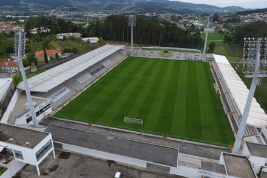

Treinador: Vasco Botelho da Costa
A trajetória de Vasco Botelho da Costa define-se por uma ascensão meteórica assente no rigor analítico e na liderança estratégica, afirmando-se como um treinador de perfil metódico, adaptável e de vincada capacidade para potenciar o coletivo.
Estádio: Comendador Joaquim de Almeida Freitas
O Estádio Comendador Joaquim de Almeida Freitas é a fortaleza xadrez de Moreira de Cónegos um reduto de alma resiliente e proximidade vibrante, onde a vila se agiganta no fervor de um estádio puro e eletrizante.

Estilo de Jogo:
Vasco Botelho da Costa implementou no Moreirense um estilo de jogo caracterizado pela versatilidade tática e pela procura de uma identidade coletiva forte.
"Vila de Primeira!"